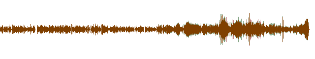
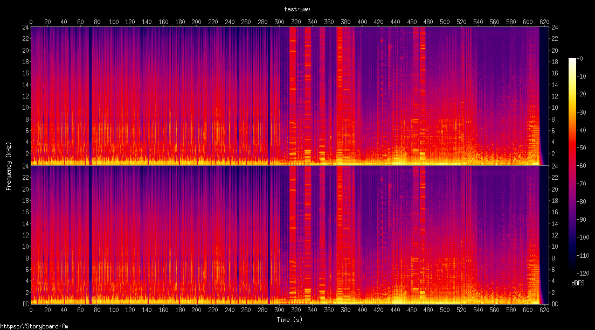

larynx
A node.js module for spoken word audio introspection, QA, and reporting.
Getting Started
npm i larynx
// Do this...
const { AudioFile, Asset, Track } = require('larynx')
// NOT this
// const larynx = require('larynx')
Dependencies
As of now, the following must be installed & in your PATH before using larynx:
- audiowaveform
- chromaprint/fpcalc
- soxi
Provided
This module provides static binaries for:
- ffmpeg
- ffprobe
- sox
API
WIP
Track
const { Track } = require('larynx')
const t1 = new Track('./test.wav')
The following features are available at the audio file level.
Track.stats()
Get audio dynamics and time-series properties via SoX
const { Track } = require('larynx')
const anAudioTrack = new Track('./test.wav')
anAudioTrack.stats((err, data) => {
console.log(data)
})
Produces the following output:
{
duration: 625.628167,
peak: { db: -0.0010597431814921337, value: 0.999878 },
rms: { db: -19.706061823541862, value: 0.103442 }
}
Track.silence()
Detect silence in the audio file via SoX
const { Track } = require('larynx')
const anAudioTrack = new Track('./test.wav')
anAudioTrack.silence((err, data) => {
console.log(data)
})
Produces the following output:
[ { '616.97': '8.65771' }, { start: false, end: false } ]
This indicates that larynx found:
- ~8.5sec of silence in the audio file at approximately 617 seconds.
- No silence at the beginning or end of the audio file
Track.fingerprint()
Generate compressed audio fingerprint via chromaprint's
fpcalctool
const { Track } = require('larynx')
const anAudioTrack = new Track('./test.wav')
anAudioTrack.fingerprint((err, fp) => {
console.log(fp)
})
Produces the following output:
AQADtEm2ZMlG3Dnyg-FSNOSHf8F0j2h-VDnCPItF5MFx5TDX4bnx9MF1pfi0HGn9QeGFVE3k4FIShniTo5l-_Mj5QX2C7NdhscmOSdxoHGEqnUhGRVKDJ3g3_Mf94XzRTNk1hHwiBXqG28N-dNQDJh2bCSeHHxLXI-VOvBSJXwSfqEZT7egRahMk6mMQf0KtxMIUUw1qZceJ45IepOolqGKeIJfhxT2e5GgqHhXyhLBOKLyI40r4IdTywLMOSk-OylmOH09242KKM1fQkiGag1dL3FGOMZGkxHiyHk2dCT1uGu36FJ7moo_xo7eK5Ihc4jyaTHlE_HgYfHi9I3QILZM0DfmCTQ-Nd0Px7MhfwTkmDbnEVCCX5GjOEZWLd2OxR4qDZsoRKtWDpB-aD_2DWXuOfsqDLFmmpEPyY9OU42nwrWiGdkgiJRRNxEwikej34PiYgze-BWPCJXlRLzqSpYkaIWeUXHh1_A2m9EcdYfzwmFFi7PieENS0fIicJF9wujhxsXiGJvrRdxGuJUokaPKJtDZ-PApHVKa24BE_bPFU7DLCSxyRLF_O4cdvnDxunJMFK2SM32hfJEtX5B_6hCHM6DmOomEQcmGgK3mQPkeuQ0t4hMtcXKEV7IFDffiHn2ienvAtIVMEbc8R3cO_wGGSCPdE_MMpnLgUXL9w_WgeOqjeoHnwo1Hy4FKGN8cNX-uQXElxMQhvNNOeoFIO64T7WOiTY9dxCnlCJJVM_EdTVyt49MKLJ6uIJ3zQhF5ETJGXpjh-hFmWH8mox3iy4zmu5ZGw58N54z7IpBFCHQkbHU0d4-FOXEfjE5NVPMeZE1-6oE5yNEt0JHceIr0U_DgTThqq41eLdh0i99COLGlwDs8TPPngRkpwkQsR52geaLRwMkcdLRPR1EXOEH9xSVfAK5mKp0yFSjsa5kZy5kZ-oteSo5nw5Okw6Qk1bMmD__hBNUZ4JMu-o10mopl-1EmIPNDzIPbIoHvRRGoyGU8u3OCPZL-OMH_wG2sahTiFPclRiZQxZWsaIfmFPMEDPy_OpMH1Yd_RXNnQjhd-_KjVGEzyEw-zI3pS1IeW7sCVT0RzPuiz5MRzXNCxqVmGS9QD_tijHf3RK8GhWTmaLHnxO8Q-QvwOVouIN4h-_EfzHP0xH09wEYmcLDpC8mhO7LgKN8d3oSfCHPozIWYYnE8wnUdTZcFzojyeBU-GZPoTPAqTChyH_9DyGOFZ4YpQZ1eQLo-hZUd0VcKdw8nwLCFy0kkgLj4iPjkaVTKeXGj6Hu-PJ0U274aWK9NQb5qGPHnA5geTddHQ5_hxmcOf4RJV5KKSFVpCIlcuwWfwTCXGJ4X1CpH0QM9yYdaJPtyQPOiNS7uCK2qWFBW-SEGvoFbg_Ag35cN9_NB8FzuNMOCD6ymmSEclZkWfw10QxjmuFmemDnqO5g-mL0cu4sx0oSf6HV1eNNmk48pSEZ-Iv_CHTyn-ID90pM-C_2Ab7MqFKW5QqwefEeGhZXmUIGc9NI0QWkJ-TMpZNBdyioamcQ_yohKPnRQs7-CYFJeEXjHC5FFCBXJyRBThJvlxHV-JkoPZB2UvnBKP30VciNtxV_jhJwqJfzmSLYsSHk0djMqPkjka5lGGpyVROQuaHxe5o5LrIcylQLeO6NuIa_HQ_CL6ZMflPDiP5jlyqHy5IBWj49SLZul2_Mj1QM88bE-OHk1z4clCKRSkIr1UHA-eH-6eBIcjC2-UDNWYC02Va_guXCOYPodLGf1x58GvHM2jCC0vhBmlo2eKK-iP5_DrQs_ROsdIJYd-hFZ2-PnQ491R63jyBGV5XGieoOSNJETu4w-6Y2aH9sfjE4-So_pRKwueHxcR5oWm7ciFC_UxOc_wsviDPzES5GlGONTxJCyO-SjDC80f44oyIVcKnaIE88RVvlBz7MlR8jBjHaWOPod0SbCJmJKC7jnOPAqe8Gjyo1-Q54yhmUf6FX3gMwo-PcN35Dq0HWEiSyKuLGqGK8F9hOFSHVJIqUHOjPj04EyCHslyycgb4vKO_8H_YVeC20IYI5mPD82K5x2crUWtfMGzI3mKlDzeB_vQLc0QpqKUQ2ceI2vwhGie5Xh26KLiBH2iCieu7MWPaySSJU8eIrTy48nxHtdRZpmLJmKN5AliM9NxSRQxVQkdODq14jCPckL4QkvFBzmjHscT5agaM0iWZB-Rh5gd_AmeHNeWfPiqodKpIGFyZUF-og8exaiZomSX49ExaekNLeMTPE324Cn8433QMEkWlPLR82iexziLZyGmTBqD_uDdY5Ij4w76DFcV4x_-DEeYOofGBmHIHW0cfJFSYRJFp6B07DxCHnqWbPiSXVD5JkEs49Fy4_xxZ0OfBJ-ko-F05HqM5F8m5Dk0ZTHSUFLgcSOOKT-uJGnx7TnCP0Gy_MWPK1EeXLpw4uBtuNHxl3iebpiC_kEuNdCcH6H148uApkef7Dh7_JEQaodS5sIPSZSfQrNyIcxOgXlwMImqBFVGMHnQ7jSaMyiZD8csxM4FuXrwJx8ahoKW8YeeHPfRP0cYzMvxZVFOrOEikgjl7EjYKzo-vbjYoHmiGP0Fx1EaBYkjMUaaKUkjeEKf4h9qMUWyecyCfDnxo5wIz8f3o3-QLw-S5aiOOw9-GU2kfwiL_9CJUsqLSVMTDY-M_If1C5ceXEoyHenx48oD_dASKSGJKknEGNHxw1fxbMf7IrfiQCuPUMlJo4l51NGFfceL-_iWwmF4XMcvpMsOvVGKPMlyXNxwYdcvND6qTPnwB0mpKMmRbxZcMcZ_PLqChH2NvMXFD14ePOOx0wtc6uCDJ0pegoqWL8j3QT3SLwfeG82O6ivxHrFzSMmUSciTKeHR_EGfonmGM3ky5HIOfUbIi2jy43gzPDViUeCHP0R4Ds147DkaRUEvBX0UWD-S8S5yMcSVRHEkNLnSoT-e8ZjJNKBzY-IaJEupI5eCXwBCkCMMAAKEEAtZRoBBhgDgEACAGSiMBAIBJpgByAgBjBAICCk4REQAZoSwAioHARTGCeWcZBQUARxQAElFEBGAAKIEJgIgZiATBgwBBSGEMCAcEhAQwAwQghAAgBGUUgFAgQAAI4ghxABDgWIEAOYQAkQJpLQRjggBCDWEIAiAEBYAA1wxCDBFhCEKIQAAIMwhA4CgjBgCCADCEGcAAQIDg5SQBBCiCAbKCGkkQwIFSIhShgLAACOCGFEIIgQQTIAlEhgAjFAEAYEYIQoIRZAwjgABEADEGACYEIQIgYAgAhm0jBMAGCSEIIIKQ5RgSAHCoBKCAKCBFAIIAwwRQAgCPEdACAYYoUQkJwwAQBGGFABAIMeQsMCCJRQhAiAiAIKKMCMEcQQJJIQzgDBBiFECEAKIIMQgwIRgCikEgCCAUQOBJABqQAQhQhhAqAGGAAmNEogABhQBBhiCBAFIOUEBoIoSYAAQwBCtBBhICEGRYYgASABC0BDAhFGGSAAEEAASgqARAAABCDDAEUEUQBoIQAzxSiBDTCKKMYQIIUMYJRBAgAIjgAAECqSAsEAZgAxSCFgiGDIMCgEIBRYIIRgCQBlBFFSSI0IFEQIhLwFAigEDgBXWACAQIYAQQYwgBgggFDGAMSARsQIoRIADACADAAFAMGWBFMgwQogZAIGAiAIAIgOcAIAQpZhDVAkgiMBEAUIIEFAgQ4wRSArmiJLAAMCAIcQYBJAkABEhsAAAAmoYIdAIIAAAgBCCAAFIAAQUEUUAQYBQChAlBDDMAkgAAYI4BIgxCihmiHACAICEgkgIxQ0AhBBhiBWCEAEEAEIJBIQRTAphnGCAECIENEIoAgAhABHBECCAICAgBEwohRxFCCAjiCBEGAuoIAwRh6AByAsDgIBGCSIMIoQCoYAhkBEBgDACEAKFYEgAIhQASgDFJEHEGEEcAkoIR4whQgkmlDFMAA
Track.waveform()
Generate a waveform image

Track.spectrogram()
Generate a spectrogram image
